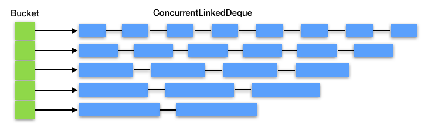

- 00 开篇词 Java程序员如何快速成长？.md
- 01 Web容器学习路径.md
- 02 HTTP协议必知必会.md
- 03 你应该知道的Servlet规范和Servlet容器.md
- 04 实战：纯手工打造和运行一个Servlet.md
- 05 Tomcat系统架构（上）： 连接器是如何设计的？.md
- 06 Tomcat系统架构（下）：聊聊多层容器的设计.md
- 07 Tomcat如何实现一键式启停？.md
- 08 Tomcat的“高层们”都负责做什么？.md
- 09 比较：Jetty架构特点之Connector组件.md
- 10 比较：Jetty架构特点之Handler组件.md
- 11 总结：从Tomcat和Jetty中提炼组件化设计规范.md
- 12 实战：优化并提高Tomcat启动速度.md
- 13 热点问题答疑（1）：如何学习源码？.md
- 14 NioEndpoint组件：Tomcat如何实现非阻塞I_O？.md
- 15 Nio2Endpoint组件：Tomcat如何实现异步I_O？.md
- 16 AprEndpoint组件：Tomcat APR提高I_O性能的秘密.md
- 17 Executor组件：Tomcat如何扩展Java线程池？.md
- 18 新特性：Tomcat如何支持WebSocket？.md
- 19 比较：Jetty的线程策略EatWhatYouKill.md
- 20 总结：Tomcat和Jetty中的对象池技术.md
- 21 总结：Tomcat和Jetty的高性能、高并发之道.md
- 22 热点问题答疑（2）：内核如何阻塞与唤醒进程？.md
- 23 Host容器：Tomcat如何实现热部署和热加载？.md
- 24 Context容器（上）：Tomcat如何打破双亲委托机制？.md
- 25 Context容器（中）：Tomcat如何隔离Web应用？.md
- 26 Context容器（下）：Tomcat如何实现Servlet规范？.md
- 27 新特性：Tomcat如何支持异步Servlet？.md
- 28 新特性：Spring Boot如何使用内嵌式的Tomcat和Jetty？.md
- 29 比较：Jetty如何实现具有上下文信息的责任链？.md
- 30 热点问题答疑（3）：Spring框架中的设计模式.md
- 31 Logger组件：Tomcat的日志框架及实战.md
- 32 Manager组件：Tomcat的Session管理机制解析.md
- 33 Cluster组件：Tomcat的集群通信原理.md
- 34 JVM GC原理及调优的基本思路.md
- 35 如何监控Tomcat的性能？.md
- 36 Tomcat I_O和线程池的并发调优.md
- 37 Tomcat内存溢出的原因分析及调优.md
- 38 Tomcat拒绝连接原因分析及网络优化.md
- 39 Tomcat进程占用CPU过高怎么办？.md
- 40 谈谈Jetty性能调优的思路.md
- 41 热点问题答疑（4）： Tomcat和Jetty有哪些不同？.md
- 特别放送 如何持续保持对学习的兴趣？.md
- 结束语 静下心来，品味经典.md
20 总结：Tomcat和Jetty中的对象池技术
Java对象，特别是一个比较大、比较复杂的Java对象，它们的创建、初始化和GC都需要耗费CPU和内存资源，为了减少这些开销，Tomcat和Jetty都使用了对象池技术。所谓的对象池技术，就是说一个Java对象用完之后把它保存起来，之后再拿出来重复使用，省去了对象创建、初始化和GC的过程。对象池技术是典型的以空间换时间的思路。
由于维护对象池本身也需要资源的开销，不是所有场景都适合用对象池。如果你的Java对象数量很多并且存在的时间比较短，对象本身又比较大比较复杂，对象初始化的成本比较高，这样的场景就适合用对象池技术。比如Tomcat和Jetty处理HTTP请求的场景就符合这个特征，请求的数量很多，为了处理单个请求需要创建不少的复杂对象（比如Tomcat连接器中SocketWrapper和SocketProcessor），而且一般来说请求处理的时间比较短，一旦请求处理完毕，这些对象就需要被销毁，因此这个场景适合对象池技术。
Tomcat的SynchronizedStack
Tomcat用SynchronizedStack类来实现对象池，下面我贴出它的关键代码来帮助你理解。
public class SynchronizedStack<T> {
//内部维护一个对象数组,用数组实现栈的功能
private Object[] stack;
//这个方法用来归还对象，用synchronized进行线程同步
public synchronized boolean push(T obj) {
index++;
if (index == size) {
if (limit == -1 || size < limit) {
expand();//对象不够用了，扩展对象数组
} else {
index--;
return false;
}
}
stack[index] = obj;
return true;
}
//这个方法用来获取对象
public synchronized T pop() {
if (index == -1) {
return null;
}
T result = (T) stack[index];
stack[index--] = null;
return result;
}
//扩展对象数组长度，以2倍大小扩展
private void expand() {
int newSize = size * 2;
if (limit != -1 && newSize > limit) {
newSize = limit;
}
//扩展策略是创建一个数组长度为原来两倍的新数组
Object[] newStack = new Object[newSize];
//将老数组对象引用复制到新数组
System.arraycopy(stack, 0, newStack, 0, size);
//将stack指向新数组，老数组可以被GC掉了
stack = newStack;
size = newSize;
}
}
这个代码逻辑比较清晰，主要是SynchronizedStack内部维护了一个对象数组，并且用数组来实现栈的接口：push和pop方法，这两个方法分别用来归还对象和获取对象。你可能好奇为什么Tomcat使用一个看起来比较简单的SynchronizedStack来做对象容器，为什么不使用高级一点的并发容器比如ConcurrentLinkedQueue呢？
这是因为SynchronizedStack用数组而不是链表来维护对象，可以减少结点维护的内存开销，并且它本身只支持扩容不支持缩容，也就是说数组对象在使用过程中不会被重新赋值，也就不会被GC。这样设计的目的是用最低的内存和GC的代价来实现无界容器，同时Tomcat的最大同时请求数是有限制的，因此不需要担心对象的数量会无限膨胀。
Jetty的ByteBufferPool
我们再来看Jetty中的对象池ByteBufferPool，它本质是一个ByteBuffer对象池。当Jetty在进行网络数据读写时，不需要每次都在JVM堆上分配一块新的Buffer，只需在ByteBuffer对象池里拿到一块预先分配好的Buffer，这样就避免了频繁的分配内存和释放内存。这种设计你同样可以在高性能通信中间件比如Mina和Netty中看到。ByteBufferPool是一个接口：
public interface ByteBufferPool
{
public ByteBuffer acquire(int size, boolean direct);
public void release(ByteBuffer buffer);
}
接口中的两个方法：acquire和release分别用来分配和释放内存，并且你可以通过acquire方法的direct参数来指定buffer是从JVM堆上分配还是从本地内存分配。ArrayByteBufferPool是ByteBufferPool的实现类，我们先来看看它的成员变量和构造函数：
public class ArrayByteBufferPool implements ByteBufferPool
{
private final int _min;//最小size的Buffer长度
private final int _maxQueue;//Queue最大长度
//用不同的Bucket(桶)来持有不同size的ByteBuffer对象,同一个桶中的ByteBuffer size是一样的
private final ByteBufferPool.Bucket[] _direct;
private final ByteBufferPool.Bucket[] _indirect;
//ByteBuffer的size增量
private final int _inc;
public ArrayByteBufferPool(int minSize, int increment, int maxSize, int maxQueue)
{
//检查参数值并设置默认值
if (minSize<=0)//ByteBuffer的最小长度
minSize=0;
if (increment<=0)
increment=1024;//默认以1024递增
if (maxSize<=0)
maxSize=64*1024;//ByteBuffer的最大长度默认是64K
//ByteBuffer的最小长度必须小于增量
if (minSize>=increment)
throw new IllegalArgumentException("minSize >= increment");
//最大长度必须是增量的整数倍
if ((maxSize%increment)!=0 || increment>=maxSize)
throw new IllegalArgumentException("increment must be a divisor of maxSize");
_min=minSize;
_inc=increment;
//创建maxSize/increment个桶,包含直接内存的与heap的
_direct=new ByteBufferPool.Bucket[maxSize/increment];
_indirect=new ByteBufferPool.Bucket[maxSize/increment];
_maxQueue=maxQueue;
int size=0;
for (int i=0;i<_direct.length;i++)
{
size+=_inc;
_direct[i]=new ByteBufferPool.Bucket(this,size,_maxQueue);
_indirect[i]=new ByteBufferPool.Bucket(this,size,_maxQueue);
}
}
}
从上面的代码我们看到，ByteBufferPool是用不同的桶（Bucket）来管理不同长度的ByteBuffer，因为我们可能需要分配一块1024字节的Buffer，也可能需要一块64K字节的Buffer。而桶的内部用一个ConcurrentLinkedDeque来放置ByteBuffer对象的引用。
private final Deque<ByteBuffer> _queue = new ConcurrentLinkedDeque<>();
你可以通过下面的图再来理解一下：

而Buffer的分配和释放过程，就是找到相应的桶，并对桶中的Deque做出队和入队的操作，而不是直接向JVM堆申请和释放内存。
//分配Buffer
public ByteBuffer acquire(int size, boolean direct)
{
//找到对应的桶，没有的话创建一个桶
ByteBufferPool.Bucket bucket = bucketFor(size,direct);
if (bucket==null)
return newByteBuffer(size,direct);
//这里其实调用了Deque的poll方法
return bucket.acquire(direct);
}
//释放Buffer
public void release(ByteBuffer buffer)
{
if (buffer!=null)
{
//找到对应的桶
ByteBufferPool.Bucket bucket = bucketFor(buffer.capacity(),buffer.isDirect());
//这里调用了Deque的offerFirst方法
if (bucket!=null)
bucket.release(buffer);
}
}
对象池的思考
对象池作为全局资源，高并发环境中多个线程可能同时需要获取对象池中的对象，因此多个线程在争抢对象时会因为锁竞争而阻塞， 因此使用对象池有线程同步的开销，而不使用对象池则有创建和销毁对象的开销。对于对象池本身的设计来说，需要尽量做到无锁化，比如Jetty就使用了ConcurrentLinkedDeque。如果你的内存足够大，可以考虑用线程本地（ThreadLocal）对象池，这样每个线程都有自己的对象池，线程之间互不干扰。
为了防止对象池的无限膨胀，必须要对池的大小做限制。对象池太小发挥不了作用，对象池太大的话可能有空闲对象，这些空闲对象会一直占用内存，造成内存浪费。这里你需要根据实际情况做一个平衡，因此对象池本身除了应该有自动扩容的功能，还需要考虑自动缩容。
所有的池化技术，包括缓存，都会面临内存泄露的问题，原因是对象池或者缓存的本质是一个Java集合类，比如List和Stack，这个集合类持有缓存对象的引用，只要集合类不被GC，缓存对象也不会被GC。维持大量的对象也比较占用内存空间，所以必要时我们需要主动清理这些对象。以Java的线程池ThreadPoolExecutor为例，它提供了allowCoreThreadTimeOut和setKeepAliveTime两种方法，可以在超时后销毁线程，我们在实际项目中也可以参考这个策略。
另外在使用对象池时，我这里还有一些小贴士供你参考：
- 对象在用完后，需要调用对象池的方法将对象归还给对象池。
- 对象池中的对象在再次使用时需要重置，否则会产生脏对象，脏对象可能持有上次使用的引用，导致内存泄漏等问题，并且如果脏对象下一次使用时没有被清理，程序在运行过程中会发生意想不到的问题。
- 对象一旦归还给对象池，使用者就不能对它做任何操作了。
- 向对象池请求对象时有可能出现的阻塞、异常或者返回null值，这些都需要我们做一些额外的处理，来确保程序的正常运行。
本期精华
Tomcat和Jetty都用到了对象池技术，这是因为处理一次HTTP请求的时间比较短，但是这个过程中又需要创建大量复杂对象。
对象池技术可以减少频繁创建和销毁对象带来的成本，实现对象的缓存和复用。如果你的系统需要频繁的创建和销毁对象，并且对象的创建代价比较大，这种情况下，一般来说你会观察到GC的压力比较大，占用CPU率比较高，这个时候你就可以考虑使用对象池了。
还有一种情况是你需要对资源的使用做限制，比如数据库连接，不能无限制地创建数据库连接，因此就有了数据库连接池，你也可以考虑把一些关键的资源池化，对它们进行统一管理，防止滥用。
课后思考
请你想想在实际工作中，有哪些场景可以用“池化”技术来优化。
不知道今天的内容你消化得如何？如果还有疑问，请大胆的在留言区提问，也欢迎你把你的课后思考和心得记录下来，与我和其他同学一起讨论。如果你觉得今天有所收获，欢迎你把它分享给你的朋友。
© 2019 - 2023 Liangliang Lee. Powered by gin and hexo-theme-book.